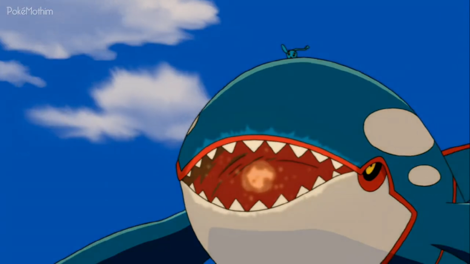

🟡 Nome Japonês: Pocket Monsters Advanced Generation the Movie: Pokémon Ranger and the Prince of the Sea: Manaphy
🟡 Nome Americano: Pokémon Ranger and the Temple of the Sea
🟡 Nome Brasileiro: Pokémon Ranger e o Lendário Templo do Mar
Data de lançamento:
🎞 Japão: 15 de julho de 2006
🎞 EUA: 23 de março de 2007
🎞 Brasil: 16 de janeiro de 2009
Assim como nos filmes anteriores, a história se inicia com uma breve
introdução sobre o mundo Pokémon. Este em especial retrata um pouco
sobre os Pokémon Rangers (Guardas Pokémon), que são personagens que
não necessariamente são treinadores, mas conseguem usar as
habilidades dos Pokémon para outras finalidades. Os Guardas Pokémon
conseguem controlar os Pokémon e seu poder para proteger outras
criaturas e aspectos da natureza que estejam passando por algum
perigo aparente.
Após essa introdução, é mostrado um item peculiar vagando pelo meio
do oceano esbarrando em Pokémon aquáticos como Remoraid, Corsola,
Luvdisc, Mantyke e Mantine, entre outros. Após essa sequência, um
submarino com uma aparência tenebrosa surge e pega aquele item, que
se trata de um ovo. O submarino é comandado pelo Capitão Phantom e
seu Chatot e são seguidos pelos tripulantes, que atendem à todos os
pedidos do Capitão.
Após capturar o ovo que vagava pelo oceano, o Capitão tenta pegá-lo,
mas é impedido por um dos capangas que se nega a entregá-lo, pois
ele entende que o Capitão deseja aquele ovo para planos maliciosos.
Irritado com a ação daquele capanga, o Capitão Phantom pede que os
outros no local impeçam ele e peguem de volta o ovo, o que acarreta
em uma árdua perseguição, seguida pela fuga do capanga com o ovo.
Esse capanga se chama Jack Walker, um habilidoso Guarda Pokémon.
Jack consegue avisar a sua Central que o trabalho foi concluído e
que está voltando. Quando ele finalmente consegue sair do submarino,
o Capitão Phantom aparece e chama seu Pinsir e seu Parasect. Nesse
momento, Jack utiliza seu capturador de Ranger para capturar um
Mantine e conseguir escapar das investidas dos Pokémon do Capitão.
Antes de fugir, Mantine ainda consegue usar o Raio Confusão nos
adversários.
Na próxima cena, Ash, Brock, May e Max aparecem perdidos em um lugar
quente deixando-os com sede. Após avistar algumas bolhas de água em
uma parte do caminho, todos rapidamente vão para a origem daquelas
bolhas. Chegando lá, eles se deparam com uma garota e vários Pokémon
aquáticos. Essa garota se trata de Lizabeth, uma jovem Coordenadora
Pokémon que treina ao lado de seus Pokémon usando bolhas de água e
ataques do tipo Psíquico de Meditite e um Medicham.
Max se aproxima e pergunta se pode tomar um pouco de água e
rapidamente todos os outros chegam e se apresentam. Brock logo
revela conhecer Lizabeth, pois ela estará no Show Pokémon Marina
Subaquático com sua família, seu avô Shep, seu pai Kyle e sua mãe
Meredith. Após as apresentações, Lizabeth os convida para seu
trailer para que lá consigam se refrescar. Dentro do trailer, Max se
diverte com o Buizel da família e May avista uma incubadora com uma
espécie de ovo dentro, mas que é ocultada pelo pai de Lizabeth.
Em certo momento, o avô de Lizabeth oferece fazer uma demonstração a
todos do que eles geralmente fazem no Show Pokémon Marina
Subaquático. May observa Buizel carregar a mesma incubadora com ovo
que avistou mais cedo e, por um momento, ela se vê segurando o ovo
depois que acidentalmente Buizel quase deixa cair. May, mesmo
impressionada com a luz emanada pelo ovo, rapidamente o entrega de
volta para um palhaço que trabalha junto com a família para que
fique em segurança.
Nesse momento, a Equipe Rocket aparece e observa tudo de um telhado.
Naquela noite, Buizel volta a mexer na incubadora fazendo com que o
ovo emane luz suficiente para chegar até o rosto de May. Então, ela
começa a ter um sonho: ele se passa em um lugar parecido com um
oceano cor de rosa com vários Pokémon, inclusive um que parece
gostar de May. Eles brincam um pouco, mas ele logo vai embora.
Assim, May acorda.
Vários helicópteros começam a se aproximar deles e dois Beedrill
aparecem atacando-os com Míssel de Espinho. Todos fogem e o Capitão
Phantom pula do helicóptero e vai atrás de Ash e Jack, que estão com
o ovo. Após uma série de investidas, o ovo acaba caindo nas mãos de
May - que tenta fugir, mas é impedida por Phantom.
Phantom tenta capturar o ovo, mas acaba abrindo a incubadora e
lançando-o pra cima, fazendo com que todos fiquem desesperados. May,
com seu instinto, corre para pegar ovo antes que ele caia. Após
pegar o ovo, ela e os outros ficam ofuscados pela forte luz emanada
por este, pois naquele momento ele estava chocando. Manaphy nasce do
ovo e avista rapidamente o rosto de May, que o acalma após ele
começar a chorar.
Com Manaphy no colo de May, o trailer passa para pegá-la e levá-la
para um local seguro. Dentro do trailer, Manaphy se acalma e
demonstra gostar muito do colo de May, já que ela foi a primeira
pessoa que ele viu. Além disso, ela havia acalmado Manaphy. Isso
ficou evidente quando Meredith tentou pegá-lo e ele começou a chorar
de novo e só se acalmou quando May o pegou. Apesar desse momento
alegre por Manaphy estar com eles, Ash percebe que os helicópteros
do Phantom ainda os persegue, inclusive lançando ganchos para tentar
prender o trailer. Felizmente, as tentativas dão errado, já que o
avô de Lizabeth consegue dar evasivas.
Após darem uma breve evasiva no helicóptero do Capitão Phantom, o
trailer chega em uma espécie de construção em ruínas em que todos
descem algumas escadas até chegar em uma porta oculta que só pode
ser aberta com uma pulseira que Shep carrega em seu braço. Phantom,
que conseguiu alcançá-los, por algum motivo também possui a pulseira
que abre a porta oculta. Os corredores do local possuem passagens
que precisam de Pokémon do tipo Água para serem atravessadas.
Chegando ao local de destino, Kyle consegue ativar uma alavanca que
é capaz de acender luzes que revelam uma espécie de templo com
imagens ligadas ao Povo da Água. A família de Lizabeth então explica
para todos sobre Samaya, o Templo do Mar. Eles explicam que o Templo
possui uma relíquia valiosa chamada de Coroa do Mar e que pode ser
encontrada nesse Templo. Contudo, ele está perdido em algum lugar do
oceano e apenas Manaphy pode encontrá-lo. Tendo em vista todo o
esforço do Phantom para capturar o ovo, fica explicado que ele quer
usar Manaphy para conseguir chegar ao Templo e atingir seu objetivo.
Após atravessar os corredores das ruínas, todos chegam até o mar.
Naquele momento, Jack agradece a todos e diz que a partir daquele
ponto o trabalho precisava continuar - e ele, como um Guarda
Pokémon, conseguiria com mais facilidade, apesar de todos estarem
envolvidos. Em determinado momento, Shep avista seu barco chamado
"Lago Azul" e explica o quão importante ele foi para suas
experiências.
May entrega Manaphy para Jack e eles partem no barco, mas antes que
o barco desapareça na imensidão do mar, Manaphy começa a chorar,
fazendo com que May e todos os outros corram implorando para irem
juntos até o Templo. Nesse momento, Manaphy lança um raio - o mesmo
raio que fez com que a Equipe Rocket trocasse de corpo - que faz com
que Ash e Jack troquem de corpo. Shep explica que esse movimento se
chama Troca de Coração e serve para que Manaphy fuja do perigo.
Todos se encontram no barco de Shep e partem em direção ao Templo.
Em um certo momento, May descobre que é preciso colocar Manaphy na
água para que ele nade e os guie até o Templo. Enquanto isso, muitas
aventuras aparentemente estáveis acontecem: mergulhos nas águas do
oceano e brincadeiras que criavam um forte vínculo entre todos os
personagens.
Durante uma conversa com Ash, Jack pede para ele que separe May de
Manaphy para que o Pokémon consiga cumprir sua missão de ser o líder
do Templo do Mar. May acaba ouvindo a conversa e sai magoada e
desesperada. Então, Lizabeth aparece e a acalma. Em certo ponto, May
finalmente entende o que Jack quis dizer. Ao perceber que Manaphy,
que estava pousado em uma rocha, cantava atraindo os Pokémon do
oceano, May viu o quanto Manaphy era importante e entendeu o porquê
dele ser chamado de "Príncipe do Mar". Por isso, ela ganha de
Lizabeth uma pulseira azul: o símbolo do Povo do Mar (a mesma
pulseira que o avô de Lizabeth usou para abrir a porta oculta nas
ruínas).
Ao amanhecer, todos chegam em uma ilha para uma pausa e Manaphy
começa a procurar May, que está no barco. May acidentalmente deixa a
bandana voar e ela acaba caindo em um Sharpedo, o que faz Manaphy
sair atrás do item para devolver à May. A bandana mais uma vez
escapa e acaba caindo, dessa vez, em cima de um Relicanth. Apesar de
demorar um pouco, o que faz com que todos fiquem em alerta, Manaphy
volta com a bandana que ele recuperou de um Cloyster e que ainda os
salvou de uma forte correnteza.
Após saírem para procurar Manaphy enquanto ele estava a procura da
bandana de May, a mãe de Lizabeth percebe que o eclipse lunar já
começou e nota que Phantom está seguindo o submarino deles. Em certo
momento, o submarino some e Lizabeth perde o contato com sua mãe,
mas logo recupera e Shep avisa que o eclipse está formado - o que
significa que eles poderão encontrar o Templo do Mar.
Todos saem e May finalmente reencontra Manaphy. Então, eles podem
finalmente entrar no Templo. Dentro dele, Manaphy começa a cantar e
no mesmo instante escuta uma voz que responde a sua canção. Lizabeth
deduz se tratar do Povo do Mar e o amuleto que ela e May possuem
começa a brilhar ao mesmo tempo em que um caminho começa a se abrir.
Phantom e a Equipe Rocket também chegam ao Templo.
Seguindo Manaphy, todos chegam até a placa da Coroa do Mar, mas não
conseguem entender o que está escrito, pois as palavras são
ancestrais e eles não conseguem decifrar. Nesse instante, Phantom
entra dizendo que possui a pulseira símbolo do Povo do Mar e
consegue ler as escritas. Elas dizem que aquele que usar a Coroa do
Mar se tornará Rei do Mar e, por isso, ele acaba fazendo com que a
placa e a rocha abram uma passagem com um longo corredor. Em outra
cena, Jack é mostrado tentando entrar no Templo, mas ele não
consegue pois perdeu o tempo do eclipse.
Após os corredores ficarem expostos, Phantom rapidamente corre
através dele, fazendo com que os outros também vão. Ao chegarem onde
a coroa está, eles avistam uma grande bolha de água cobrindo uma
coroa com vários cristais. Manaphy, ao avistar aquilo, começa a se
animar e corre para dentro da bolha, mas é surpreendido quando
Phantom retira um dos cristais da Coroa - fazendo com que a bolha
estoure e todo o Templo comece a alagar.
Como o Templo está alagando, ele acaba se tornando visível outra vez
no meio do oceano, fazendo com que Jack consiga entrar. Phantom
continua retirando os cristais da Coroa e, enquanto isso, Lizabeth
pede que todos voltem para o submarino. Eles encontram Jack, que
corre em direção ao Capitão para tentar impedir o vilão de arruinar
todo o Templo. Ao chegar lá, Jack ainda consegue pegar alguns
cristais, mas é impedido por Phantom, que acaba levando os dois a
serem carregados pela água juntamente com um dos cristais da Coroa.
Manaphy consegue escapar do colo de May e vai em direção ao local em
que a Coroa estava com o intuito de salvar seu lar, o que faz com
que Ash e May vão atrás dele. Ash e May pegam os cristais e tentam
posicioná-los no local em que estavam a fim de salvar o Templo, mas
eles percebem que falta um cristal, que é exatamente o que foi
levado junto com Phantom. Sem esse cristal, eles não poderão conter
o alagamento - que continua cada vez maior. Jack consegue escapar da
correnteza e se salva no submarino de Phantom, e Ash consegue
localizar o cristal que foi levado junto com Phantom.
Com o cristal em mãos, Ash decide por si só colocar no lugar, mas o
alagamento o impede de diferentes formas. Em certo momento, o
cristal fica caindo; em outro, fica preso. E obviamente, com muito
esforço, ele tenta resolver o problema. Com muita dificuldade, Ash
consegue puxar o cristal, mas devido a falta de ar no local ele
acaba desmaiando. Ao perceber toda a situação, Manaphy usa seu poder
capaz de transmitir os pensamentos de May para Ash, o que faz com
que o garoto acorde, respire e coloque o cristal em seu devido
lugar.
Após Ash colocar o último cristal no local, a coroa começa a brilhar
de uma forma muito intensa, fazendo com que muitos Pokémon sejam
atraídos, incluindo Kyogre - que mostra toda sua glória. May, que
estava dentro do submarino com Manaphy, abre o compartimento e tenta
entender o que aconteceu com Ash. Nesse instante, Phantom aparece,
pega Manaphy e foge em seguida. Ash ressurge do mar coberto por uma
luz amarelada e segue em direção a Phantom para recuperar Manaphy.
Todos ficam surpresos e Shep explica que Ash, por recuperar a coroa,
se tornou Rei do Mar. Phantom então afunda e é arremessado para o
alto por Kyogre, o que faz com que Ash consiga pegar Manaphy.
Não querendo desistir, Phantom ressurge das águas com seu submarino
e ordena que seus capangas usem um Supersônico nos Wailord que estão
tentando impedir sua ação. Nesse momento, Manaphy usa seu poder,
recuperando os Pokémon e fazendo com que eles continuem atacando o
submarino de Phantom - até que, por fim, Kyogre lança um poderoso
Hiper Raio destruindo tudo. Phantom tenta reagir, mas é tomado pelos
escombros dos destroços de seu submarino.
Após essa sequência que deixou todos bem, Ash retorna ao submarino da família da Lizabeth e mostra a todos o seu novo poder. O Templo, que voltou a sua forma, começa a fundar, o que faz com que Manaphy tenha que ir também. Sabendo que teria que se despedir de Manaphy, May observa vindo até sua direção. Então o Pokémon a abraça, sorri e diz, como May o ensinou: "Te amo, mamãe. Te amo, May. Feliz...". Manaphy então retorna para seu Templo, deixando May triste. Ela, por sua vez, diz a todos que ficará bem. O filme então termina com todos olhando para o horizonte enquanto navegam pelo imenso mar.
🟡 Professor Sebastian e os Rockets Attila e Hun, de Pokémon Chronicles, aparecem na apresentação do mundo Pokémon no início do filme, na cena em que Rayquaza está sendo capturado;
🟡 Kunihiko Yuyama viajou para a Itália para visitar as ruínas de Roma, a cidade de Nápoles e a ilha de Capri para pegar ideias para o filme;
🟡 A dublagem Coreana foi lançada no dia 20 de julho de 2006, apenas 5 dias depois do lançamento no Japão;
🟡 Este foi o último trabalho da franquia Pokémon em que foi utilizada a animação cel (na qual cada frame é desenhada e pintada em folhas de plástico sobreposta por um fundo pintado a mão antes de serem fotografadas. A série de TV mudou para o digital em 2002, mas os filmes só mudaram depois deste;
🟡 Na dublagem, quando se referem a Diamantes e Pérolas pela primeira vez no filme, Meowth diz: “Hey, isso é um bom nome para um jogo”. Quando são mencionados pela segunda vez, ele diz: “Vamos passar por essa temporada primeiro”. Isso fazia referência ao próximo jogo da franquia, e à próxima temporada do anime Pokémon;
🟡 Jack captura um Fearow com seu Styler, o que pode ser uma referência ao Líder Ranger Spenser e seu Fearow;
🟡 As cores que Jack usa durante seu flashback lembram as de Ethan;
🟡 Próximo ao clímax do filme, Ash vira seu boné para trás pela primeira vez em algumas temporadas;
🟡 Cenas utilizadas no trailer apresentado no final da versão japonesa de Pokémon Ranger – Deoxys Crisis! não foram usadas na versão final do filme. Como a cena em que Ash é lavado enquanto procura Pikachu, a cena em que os braceletes de May e Lizabeth brilham, uma cena que mostra uma arquitetura alternativa ao Templo do Mar e um pulo de Kyogre à superfície durante a noite;
🟡 Esta é a primeira versão dublada que não usou o Logo Pokémon em vez de um título contendo a palavra “Pokémon”. A fonte e a cor do título são similares ao título japonês;
🟡 Brendan faz uma aparição no começo do filme controlando um Swampert, o que pode ser uma referência ao rival usar um Pokémon com vantagem sobre o personagem principal (Combusken da May);
🟡 Este foi o primeiro filme em que o Pokémon protagonista não foi do tipo Psíquico;
🟡 Diferentemente dos posters e capas de DVD, Ash não controla nenhum barco durante o filme.
🟡 Quando Manaphy, ainda como ovo, usa o Troca de Coração para trocar as mentes dos membros da Equipe Rocket, na versão japonesa, Meowth diz estar falando com a voz de James, não de Jessie; James diz estar falando com a voz de Jessie e não com a de Meowth; Jessie diz estar falando com a de Meowth, e não com a de James.